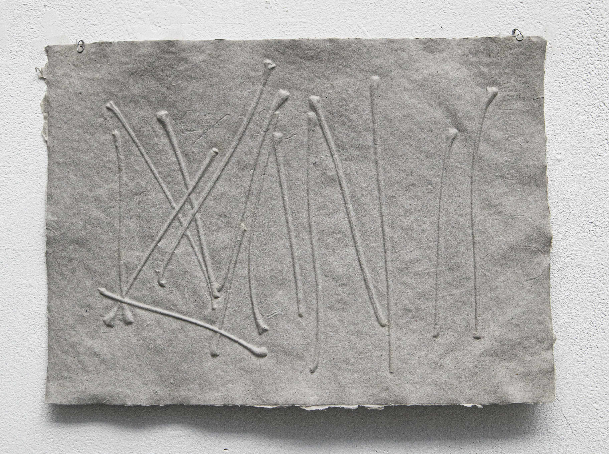
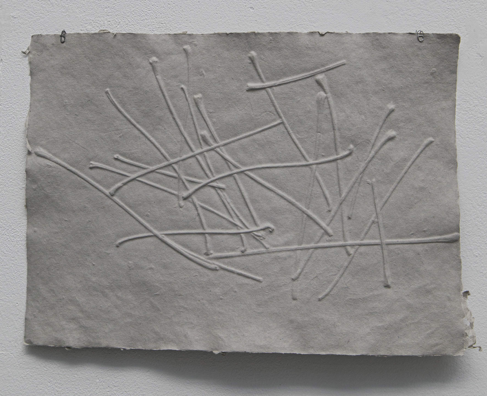
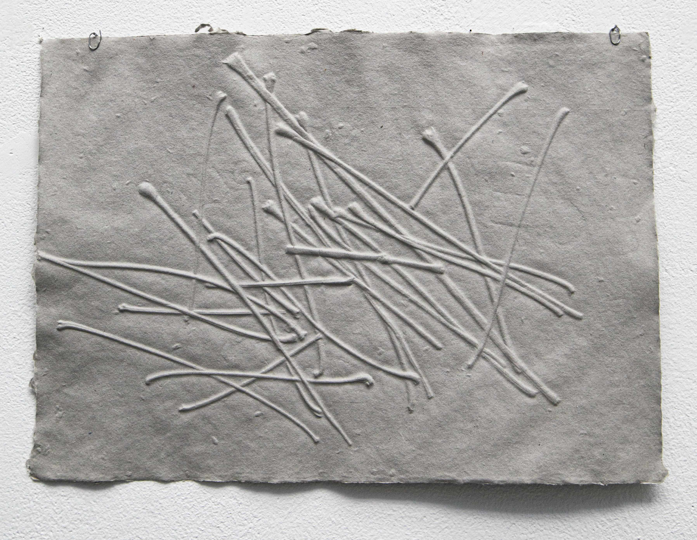
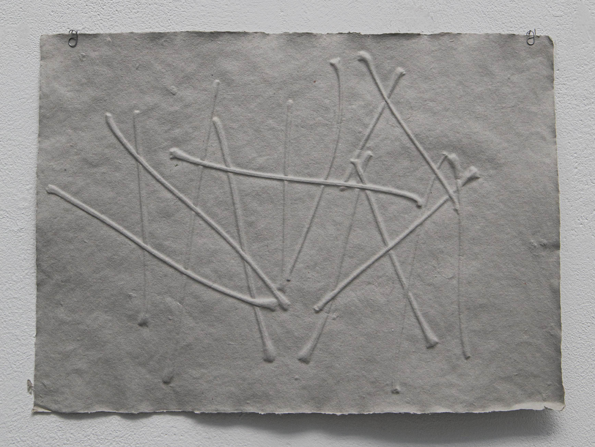
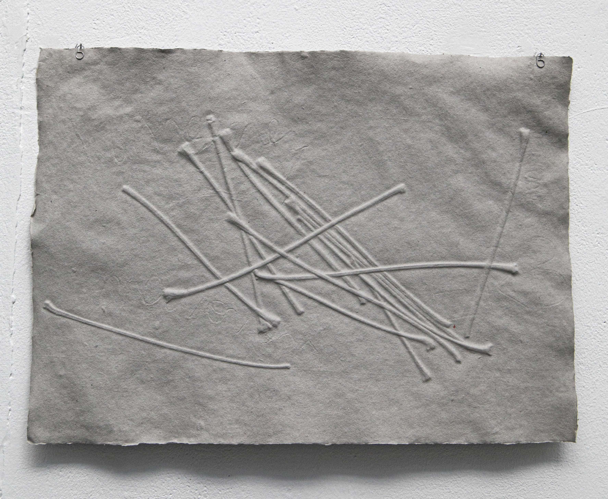

Petioles
L’empreinte des pétioles, l'idée vient d'une simple observation fortuite des feuilles d’arbre dans la pluie (des nervures et des pétioles). Ce qui m’intéresse ici, c’est
que la forme du pétiole est comme le geste du début et la pause ou la fin du trait quand on fait la peinture et la calligraphie avec le pinceau.




